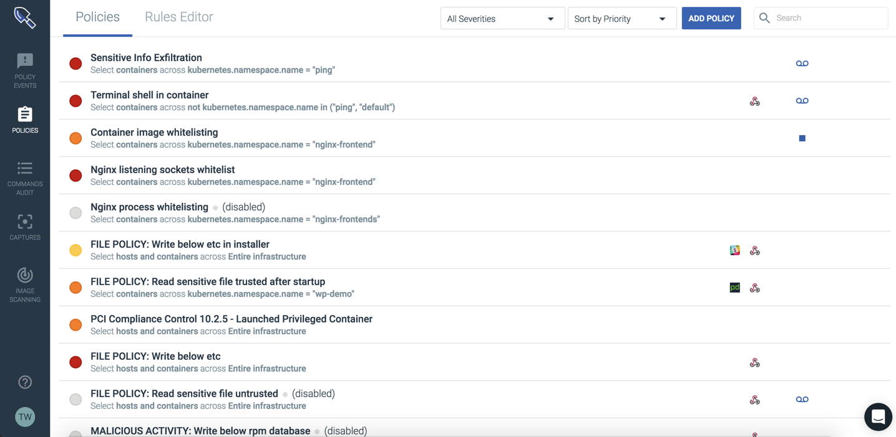
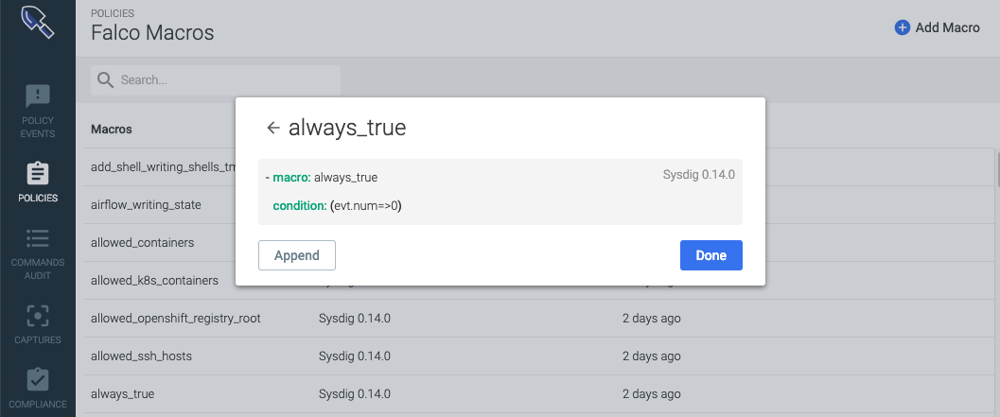
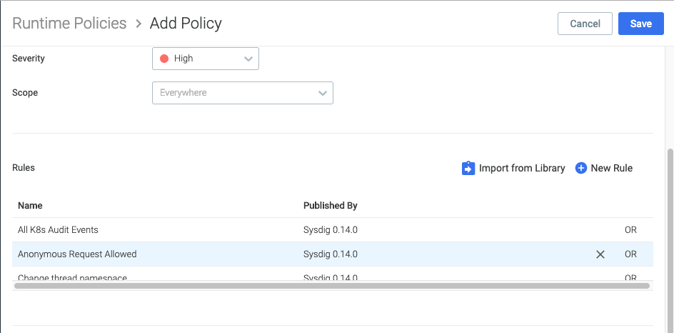
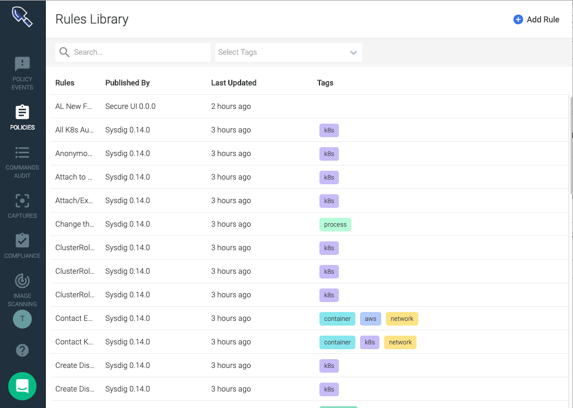

Policies
The Policies module lists all policies defined for the Sysdig Secure environment. Policies are a collection of rules that define:
the boundaries of expected behavior for the environment
the actions to be taken if boundaries are violated.
Through this module, policies, and the underlying rules that define them, can be added, edited, or removed.
Rules can be defined to whitelist or blacklist specific commands and processes, container images, network connections, read/write permissions, and system calls. In addition, advanced/custom rules can be written, using the Falco rules syntax. Falco is a behavioral activity monitoring tool, designed to detect abnormal behavior in applications and containers.
For more information about Falco, refer to the Falco documentation.
Navigate the Policies Module
The Policies Tab
The Policies tab displays the list of currently configured policies. These policies are listed in order of priority, and policies are validated in priority order, from top to bottom, until a terminating action (for example, a syscall is blacklisted, or a container is stopped) occurs.
Note
The default priority is oldest → newest policy, based on date of creation. Policy priority can be configured in the Edit Policy panel.
|  |
The main policy list displays the following information:
Policy Information | Description |
|---|---|
Severity | The configured severity of the policy. The severity reflects the risk and impact to the entities impacted if the policy is triggered:
|
Policy Name | The name of the policy. |
Scope | The entities impacted by the policy. |
Notification Channels | The types of notification channels configured for the policy. This is represented by one or more notification channel related icons. |
Actions | The actions the policy should trigger. This is represented by a Stop or Pause icon, or left blank. |
Captures | Whether a capture file should be created. This is represented by the Captures (recording tape) icon. |
Selecting a policy from the list opens a side panel, where the policy can be reviewed in detail, and configured if necessary. For more information, and examples, refer to the Configure Policies section below.
Configure the Policies List
The policy list can be filtered and sorted to better show the policies users need to review.
To filter the policies list:
From the
Policiesmodule, open theSeveritydrop-down list:
Check/uncheck the relevant severity types. The example below only displays
Lowseverity policies:
To sort the policies list:
From the
Policiesmodule, open theSort Bydrop-down list:
Select the preferred way to group/sort the policies. The example below groups the policies by severity:
The Rules Editor Tab
The Rules Editor tab displays the default and custom Falco rules currently configured for the environment.
Note
The Default Rules panel is read-only for SaaS customers, and updated with each release. On-premises customers need to update the default rules manually. For more information, refer to the Advanced Rules section.
For more information on writing Falco rules, refer to the Falco Rules documentation.
Configure Policies
The creating/editing policies process can be broken into two main parts: defining the general properties of the policy (for example, the scope and notification channels), and defining the rules that form the policy framework.
Note
New Falco rules must be written before they can be added to a new/edited policy. For more information on creating rules with Sysdig Falco, refer to the Falco Rules documentation.
Note
Notification channels must be created before they can be added to a new/edited policy. For more information on configuring notification channels, refer to the Notifications Management documentation.
Create a Policy
To create a new policy:
Note
Steps three → eight in the following process are optional, as a policy does not require every type of rule to be configured. However, at least one rule type must be configured for the policy to be created.
From the
Policiesmodule, click theAdd Policybutton.Configure the policy's general properties:
Define a meaningful policy name.
Optional: Define an accurate policy description to increase user accessibility.
Set the policy severity to
High(red),Medium(orange), orLow(Yellow)Note
Policy severity is subjective, and is used to group policies within a Sysdig Secure instance.
Toggle the
Enabledswitch as necessary.Define the policy priority within the infrastructure.
Warning
Policy priority is critical to the policy workflow. Sysdig recommends reviewing policy priorities whenever a new policy is created, to ensure policies are triggered in the correct order.
Define the policy scope within the infrastructure, and whether the policy applies to hosts and/or containers.
Define the actions that should occur when the policy is triggered:
Set the container action to
Nothing(no change will occur, but a event notification will be sent),Stop(the container will be killed), orPause(the container will be paused for review).Optional: Check the Captures checkbox to enable capture creation, and define the time before and after the event the capture file should record.
Note
For more information about capture files, refer to the Captures documentation.
Add the notification channels the policy should use if triggered.
Note
For more information on configuring notification channels, refer to the Notifications Management documentation.
Optional: Navigate to the
Processestab:Warning
Process names must match exactly. Wildcards and partial matches are not supported.
Define a comma-separated list of processes to whitelist.
Define a comma-separated list of processes to blacklist.
Select either
Evaluate next policy,Whitelist, orBlacklist, for all processes not explicitly listed in steps a and b.
Optional: Navigate to the
Containerstab:
Note
Container image names can be expressed in the following formats:
namename:tagname:tag@digesthost:port/name:tag@digesthost/name:tag@digest
Note
Wildcards and partial matches are not supported. For example, the string
myscannot be used to match allmysqlcontainers. However, the stringmysqlwill match bothmysql:latestandmysql:1.2.4.Define a comma-separated list of container images to whitelist.
Define a comma-separated list of container images to blacklist.
Select either
Evaluate next policy,Whitelist, orBlacklist, for all container images not explicitly listed in steps a and b.
Optional: Navigate to the
Networktab:
Note
Sysdig only considers listening ports for policy configuration. Port matching is only done once, when the listen occurs, and not for any additional activity.
Define whether inbound/outbound connections can be initiated within the configured scope.
Define the TCP ports that can be/cannot be used for listening.
Define the UDP ports that can be/cannot be used for listening.
Select either
Evaluate next policy,Whitelist, orBlacklist, for all container images not explicitly listed in steps b and c.
Optional: Navigate to the
File Systemtab:
Note
Policy violations for file system rules are evaluated when common system calls for file/directory opening, creation, renaming, and removing are successfully executed.
The following system calls are currently supported:
open/openatmkdir/mkdiratrmdirrename/renameatunlink/unlinkat
Define the read/write operations that should be whitelisted/blacklisted for the configured scope.
Define the read only operations that should be whitelisted/blacklisted for the configured scope.
Select either
Evaluate next policy,Whitelist, orBlacklist, for all operations not defined in steps a and b.
Optional: Navigate to the
Syscallstab:
Warning
System call names must match exactly. Wildcards and partial matches are not supported.
Define a comma-separated list of system calls to whitelist.
Define a comma-separated list of system calls to blacklist.
Select either
Evaluate next policy,Whitelist, orBlacklist, for all system calls not explicitly listed in steps a and b.
Optional: Navigate to the
Falcotab:
Open the
Falco Rulesdrop-down list.Select the Falco rule for the policy to use.
Note
New Falco rules must be written before they can be added to a new/edited policy. For more information on creating rules with Sysdig Falco, refer to the Falco Rules documentation.
Optional: Repeat steps one → eight to create additional policies before saving.
Click the
Apply Changesbutton to save the changes, or theDiscard / Discard Allbutton to revert all changes.
Edit Existing Policies
To edit an existing policy:
From the
Policiesmodule, select the relevant policy.Edit the policy as necessary.
Optional: Repeat steps one and two for each additional policy that needs to be edited.
Click the
Apply Changesbutton to save the changes, or theDiscard / Discard Allbutton to revert all changes.
Duplicate an Existing Policy
Policies can be duplicated to speed up the policy creation process. This is useful when multiple policies have similar scopes, rules, or other configuration options. To duplicate an existing policy:
From the
Policiesmodule, select the relevant policy.Click the
Copy Policy(pages) icon, either in the Policies list, or in theEdit Policywindow:
Edit the new policy.
Optional: Repeat steps one, two, and three for each additional policy that needs to be duplicated.
Click the
Apply Changesbutton to save the changes, or theDiscard / Discard Allbutton to revert all changes.
Delete Existing Policies
Policies can be deleted via the Edit Policy window. To delete a policy/multiple policies:
From the
Policiesmodule, select the relevant policy.Click the
Delete(trash can) icon in theEdit Policywindow:
Optional: Repeat steps one and two to tag multiple policies for deletion:

Click the
Apply Changesbutton to save the changes, theRevert(left arrow) icon to revert the changes to a single policy, or theDiscard / Discard Allbutton to revert all changes:
Advanced Rules
In Sysdig Secure, advanced/complex rules can be created for policies using the Falco Rules Engine. Sysdig provides a number of default Falco rules already configured. These rules can be modified or overwritten, allowing for the creation of detailed policies.
Note
For more information on writing Falco rules, refer to the Falco Rules documentation.
Update the Default Falco Rules (On-Premises Environments Only)
New Falco rules are regularly added to the default Falco rules list by the Sysdig Engineering Team. On-premises environments need to be updated manually to add the new rules.
Note
The Default Rules panel is read-only for SaaS customers, and updated with each release.
To update the default Falco rules:
In a web browser, navigate to https://raw.githubusercontent.com/draios/falco/dev/rules/falco_rules.yaml.
Copy the Falco Rules file content.
In a web browser, navigate to https://secure.sysdig.com.
Open the
Policiesmodule.Navigate to the
Rules Editortab.Replace the default rules with the latest version, and click the
Savebutton.Note
Updating the default rules will not override existing custom rules.
Update the Default Falco Rules (On-Premises Environments Only)
Policy Creation Walkthrough
The example walkthrough below covers creating a new Sysdig Secure policy, and the underlying Falco rules, to address the following use case:
Prevent web fetch programs from within a container.
Name the Web Fetch Programs
The first step in the walkthrough is to create a list and macro in the Falco Rules editor, that name the programs that count as web fetch programs. In this example, binaries are used to name programs, and programs refers to a condition that compares proc.name to a list of binaries.
Note
Adding parentheses around the condition field of each macro is considered best practice, as it ensures the values are always treated as a single unit.
- list: web_fetch_binaries items: [curl, wget] - macro: web_fetch_programs condition: (proc.name in (web_fetch_binaries))
Capture Web Fetch Spawns
The second step is to write a macro that captures exec of a web fetch program. The example below uses the existing spawned_process macro:
- macro: spawn_web_fetcher condition: (spawned_process and web_fetch_programs)
Define Exceptions
The third step is to write a macro that adds the ability to name a set of exceptions for the rule:
- macro: allowed_web_fetch_containers condition: (container.image startswith quay.io/my-company/services)
Define the Rule
The fourth step is to create the rule, using all of the macros created earlier in the walkthrough:
Note
The container macro restricts this rule to apply only to containers.
- rule: Run Web Fetch Program in Container desc: Detect any attempt to spawn a web fetch program in a container condition: spawn_web_fetcher and container and not allowed_web_fetch_containers output: Web Fetch Program run in container (user=%user.name command=%proc.cmdline %container.info image=%container.image) priority: INFO tags: [container]
Once complete, the example rule should look like the following in the Sysdig Secure custom Falco rules panel:
Create the Policy
The fifth step is to create the Sysdig Secure policy associated with the new Falco rule:
Verify Policy
Finally, verify the policy works correctly. For the walkthrough example, the following command should generate a policy event:
user@host:~$ docker run --rm byrnedo/alpine-curl https://www.google.com
 |
**Policies** (New Editor)
<Intro>
Contents
Contents
Understanding Sysdig Secure Policies
Reviewing the Runtime Policies UI
See at a Glance
Take Action
Understanding Sysdig Secure Rules
Falco Rules
"Basic" Rules
Container Rules
File System Rules
Network Rules
Process Rules
Syscall Rules
Understanding the Rules Library
Using Falco within Sysdig Secure
What is Falco
Anatomy of a Falco Rule
About Falco Macros
About Falco Lists
(On-Prem Only) Upgrading Falco Rules with the Rules Installer
Getting Started
Understanding Sysdig Secure Policies
A Sysdig Secure policy is a combination of rules about activities an enterprise wants to detect in an environment, the actions that should be taken if the policy rule is breached, and-- potentially-- the notifications that should be sent. A number of policies are delivered out-of-the-box and can be used as-is, duplicated, or edited as needed. You can also create policies from scratch, using either predefined rules or creating custom rules.
Reviewing the Runtime Policies UI
Select Policies > Runtime Policies to see the default Policies included with Sysdig Secure.
 |
From this overview, you can:
Severity LevelDefault policies are assigned High, Medium, Low, or Info level severity, which can be edited.
Enabled/Not Enabled Viewed by toggle
Policy Summary
Includes
Updatestatus, the number ofRules, assignedActionsto take on affected containers (Stop | Pause | Notify), andCapturedetails, if any.
From this panel you can also:
Drill down to policy details(and potentially Edit them)
Search and filter policies by name, <keyword??>, or severity level
Enable/Disable a policy using the toggle
Create a new policy using the
+Add Policybutton
Understanding Sysdig Secure Rules
A rule is any type of activity that an enterprise would want to detect in its environment.
Rules can be expressed in two formats:
Falco rules syntax
Basic rules syntax, grouped into five types: Container Image, File System, Network, Process, and Syscall.
The Sysdig Secure UI groups rules into the different types and provides appropriate rule-creation entry screens for each type. (See also: Create a Rule.)
Falco Rules
See Using Falco within Sysdig Secure for a Falco overview.
Note that Falco rules can be complex, and can be scaled to 100s of rules without impacting performance.
"Basic" Rules
Basic rules provide for simple detections of processes, network connections, and other operations. For example:
If this process is detected, alert me.
Or
If a network connection on x port is detected, alert me.
Unlike Falco rules, the basic rule types do not permit complex rule combinations, such as "If a connection on x port from y IP address is detected..."
Basic rules can be scaled to 1000s of rules without impacting performance.
The five categories of basic rules are described below.
These rules are used to notify if a specific image name is running in an environment.
These rules are used to notify if there is write activity to a specific directory/file.
<distinguish between read-only or read/write. I.e. whitelist files>
These rules are used to:
Detect activity on ports outside a trusted list on a specific list
Notify in case of unexpected inbound/outbound connections
These rules are used to detect if a specific process, such as ssh, is running in a particular area of the environment.
Note
The syscall rule type is almost never deployed in user-created policies; the definitions below are for information only.
These rules are used (internally) to:
Notify if a specific syscall happens in a list
Notify if a syscall outside this trusted list happens in the environment
Understanding the Rules Library
Organized by tags, where create new rules, can be referenced in policies.
Using Falco within Sysdig Secure
Falco is an open-source intrusion detection and activity monitoring project. Designed by Sysdig, the project has been donated to the Cloud Native Computing Foundation, where it continues to be developed and enhanced by the community. Sysdig Secure incorporates the Falco Rules Engine as part of its Policy and Compliance modules.
Within the context of Sysdig Secure, most users will interact with Falco primarily through writing or customizing the rules deployed in the policies for their environment.
Falco rules consist of aconditionunder which an alert should be generated and anoutput stringto send with the alert.
Falco rules use the Sysdig filtering syntax (documented here).
(Note that much of the rest of the Falco documentation describes installing and using it as a free-standing tool, which is not applicable to most Sysdig Secure users.)
Rule conditions are typically made up of macros and lists.
Macros are simply rule condition snippets that can be re-used inside rules and other macros, providing a way to factor out and name common patterns.
Lists are (surprise!) lists of items that can be included in rules, macros, or other lists. Unlike rules/macros, they can not be parsed as Sysdig filtering expressions.
Behind the scenes, the falco_rules.yaml file contains the raw code for all the Falco rules in the environment, including Falco macros and lists.
All Falco rules include the following base parameters:
rule name: default or user-assigned
condition: the command-line collection of fields and arguments used to create the rule
output:
source:
description:
tags: for searching and sorting
<priority?>
Select a rule from the Rules Library to see or edit its underlying structure. The same structure applies when creating a new Falco rule and adding it to the library.
Existing Rule | Create a Rule | ||
<where's priority?> |

Many of the Falco rules in the Rules Library contain Falco macros in their condition code.
You can browse the Falco Macros list, examine a macro's underlying code, or create your own macro.
|  |
To override the behavior of the default macros included in Sysdig Secure policies and rules, use the Rules Editor.
Default Falco lists are added to improve user experience around writing custom rules for the environment.
For example the list allow.inbound.source.domains can be customized and easily referenced within any rule.
Sysdig Secure SaaS is always using the most up-to-date Falco rules set.
Sysdig Secure On-Prem accounts should upgrade their Falco rules set regularly.
Rules Installer
Use the Docker pull command and instructions on for the Rules Installer, here.
Getting Started
NOTES
Release Notes & Update
- Differences between V1 and V2 policies
- Policies now support multiple falco rules- Policies no longer have priority
**Manage Policies**
<intro>
Create a Policy
Select
Policiesand click+Add Policy.Fill out the form as described below, and click
Save.The instructions below are divided into Basic Parameters, Rules, and Actions.
 |
Name and Description: Provide meaningful, searchable descriptors
Policy Severity: Choose the appropriate severity level as you would like to see it in the
Runtime PoliciesUI.Policy severity is subjective and is used to group policies within a Sysdig Secure instance.
NOTE: There is no inheritance between the underlying
rule prioritiesand the severity you assign to the policy.Policy Scope: Define the scope to which the policy will apply. Some examples:
-example
-example
-example
You can select existing rules from the Library or create new rules on the fly and add them to a policy.
The Policy Editor interface provides many flexible ways to add rules to or remove rules from a Policy; the instructions below demonstrate one way.
See also: **Manage Rules**
From the New Policy (or Edit Policy) page, click
Import from Library.The Import from Rules Library page is displayed.

Select the checkboxes by the rules to import.
Tip
You can pre-sort a collection of rules by searching for particular keywords or tags, or clicking a colored Tag icon (e.g.
 ).
).Click Mark for Import.

A blue
Importiconappears to the right of the selected rules and the
Import Rulesbutton is activated.
Click
Import Rules.The Policy page is displayed with the selected rules listed.
 Tip
You can remove a rule from a Policy by clicking the X next to the rule in the list.
Create a Rule from the Policy Editor
Containers: Select what should happen to affected containers if the policy rules are breached:
-
Nothing (alert only):Do not change the container behavior; send a notification according to Notification Channel settings.-
Stop:Stop the container. (Must be restarted manually? or what are the parameters of a "Stop"?)-
Pause:Pause the container (until what?)Capture:
See also: ...
Notification Channels:
See also...
Edit a Policy
Duplicate a Policy
Delete a Policy
**Manage Rules**
<intro>
Explore the Rules Library
|  |
Create a Rule
xyz
XYZ
xyz

Enter the parameters:
Name
Description
Condition (see also)
Output (see also)
Priority
Source
Tages
Edit a Rule
See also: Anatomy of a Falco Rule
Duplicate a Rule
<use case?>
Delete a Rule
<impact? Will it be deleted from policies it's in, or only for new-created policies?)
Update Rules
See also: On-Prem Only) The Falco Rules Installer